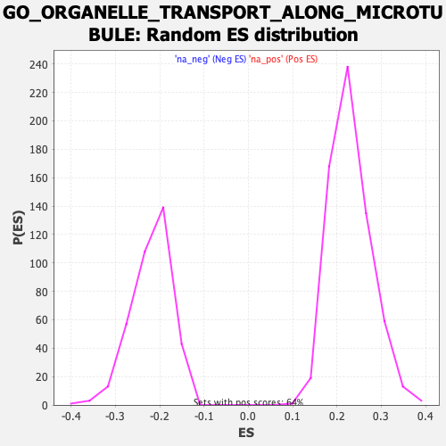

| | | Dataset | CK_basal |
| Phenotype | NoPhenotypeAvailable |
| Upregulated in class | na_neg |
| GeneSet | GO_ORGANELLE_TRANSPORT_ALONG_MICROTUBULE |
| Enrichment Score (ES) | -0.49767923 |
| Normalized Enrichment Score (NES) | -2.272826 |
| Nominal p-value | 0.0 |
| FDR q-value | 0.006335635 |
| FWER p-Value | 0.047 |
Table: GSEA Results Summary
 Fig 1: Enrichment plot: GO_ORGANELLE_TRANSPORT_ALONG_MICROTUBULE
Fig 1: Enrichment plot: GO_ORGANELLE_TRANSPORT_ALONG_MICROTUBULE
Profile of the Running ES Score & Positions of GeneSet Members on the Rank Ordered List
| SYMBOL | RANK IN GENE LIST | RANK METRIC SCORE | RUNNING ES | CORE ENRICHMENT | | 1 | BLOC1S3 | 1191 | 1.948 | -0.0412 | No |
| 2 | AP3B2 | 1270 | 1.912 | -0.0256 | No |
| 3 | STK11 | 2638 | 1.469 | -0.0808 | No |
| 4 | KIF23 | 2662 | 1.464 | -0.0669 | No |
| 5 | CLN3 | 3007 | 1.382 | -0.0704 | No |
| 6 | WASF1 | 3663 | 1.235 | -0.0914 | No |
| 7 | TRIM46 | 3977 | 1.175 | -0.0954 | No |
| 8 | NEFH | 4286 | 1.109 | -0.0999 | No |
| 9 | KIF3C | 4460 | 1.078 | -0.0977 | No |
| 10 | MAP1S | 4657 | 1.036 | -0.0971 | No |
| 11 | SPAST | 4822 | 1.000 | -0.0953 | No |
| 12 | SYNE2 | 5854 | 0.821 | -0.1399 | No |
| 13 | KIF1A | 6704 | 0.671 | -0.1766 | No |
| 14 | NEFL | 6787 | 0.658 | -0.1741 | No |
| 15 | PRKCZ | 6865 | 0.646 | -0.1714 | No |
| 16 | TMEM201 | 6972 | 0.628 | -0.1704 | No |
| 17 | COPG2 | 7052 | 0.613 | -0.1682 | No |
| 18 | FBXW11 | 8196 | 0.422 | -0.2226 | No |
| 19 | LRPPRC | 8415 | 0.386 | -0.2298 | No |
| 20 | VAMP7 | 8726 | 0.333 | -0.2424 | No |
| 21 | NDE1 | 8906 | 0.301 | -0.2485 | No |
| 22 | COPG1 | 9272 | 0.236 | -0.2648 | No |
| 23 | KIF13A | 9325 | 0.227 | -0.2652 | No |
| 24 | KIF1C | 9366 | 0.220 | -0.2650 | No |
| 25 | SNAPIN | 9436 | 0.209 | -0.2664 | No |
| 26 | BICD2 | 10041 | 0.111 | -0.2963 | No |
| 27 | CNIH2 | 10117 | 0.100 | -0.2991 | No |
| 28 | FEZ1 | 10239 | 0.075 | -0.3046 | No |
| 29 | DTNBP1 | 10995 | -0.056 | -0.3428 | No |
| 30 | BLOC1S4 | 11258 | -0.099 | -0.3553 | No |
| 31 | KIF1B | 11998 | -0.229 | -0.3909 | No |
| 32 | CDC42 | 12281 | -0.281 | -0.4025 | No |
| 33 | AGBL4 | 12625 | -0.344 | -0.4166 | No |
| 34 | RAB1A | 12781 | -0.374 | -0.4208 | No |
| 35 | BLOC1S6 | 12893 | -0.395 | -0.4224 | No |
| 36 | AP3S2 | 12908 | -0.397 | -0.4191 | No |
| 37 | DYNC1I1 | 13062 | -0.430 | -0.4225 | No |
| 38 | AP3S1 | 13791 | -0.574 | -0.4540 | No |
| 39 | BORCS5 | 13945 | -0.602 | -0.4557 | No |
| 40 | NDEL1 | 13977 | -0.608 | -0.4511 | No |
| 41 | KIF5B | 14277 | -0.663 | -0.4596 | No |
| 42 | TRIM58 | 14773 | -0.767 | -0.4772 | No |
| 43 | AP3M1 | 14963 | -0.800 | -0.4787 | No |
| 44 | MAPT | 15095 | -0.829 | -0.4769 | No |
| 45 | BLOC1S1 | 15500 | -0.926 | -0.4882 | Yes |
| 46 | HAP1 | 15537 | -0.936 | -0.4804 | Yes |
| 47 | KIFAP3 | 15681 | -0.972 | -0.4778 | Yes |
| 48 | RASGRP1 | 16048 | -1.060 | -0.4857 | Yes |
| 49 | MGARP | 16059 | -1.062 | -0.4753 | Yes |
| 50 | BLOC1S5 | 16223 | -1.100 | -0.4724 | Yes |
| 51 | AP3M2 | 16483 | -1.162 | -0.4737 | Yes |
| 52 | DYNC1H1 | 16500 | -1.167 | -0.4626 | Yes |
| 53 | RHOT2 | 16885 | -1.280 | -0.4692 | Yes |
| 54 | SUN1 | 16975 | -1.302 | -0.4604 | Yes |
| 55 | HTT | 17347 | -1.415 | -0.4649 | Yes |
| 56 | SYBU | 17573 | -1.485 | -0.4612 | Yes |
| 57 | UXT | 17712 | -1.536 | -0.4525 | Yes |
| 58 | TRAK2 | 17765 | -1.556 | -0.4392 | Yes |
| 59 | AP3B1 | 17981 | -1.645 | -0.4333 | Yes |
| 60 | KIF3B | 18023 | -1.664 | -0.4183 | Yes |
| 61 | PAFAH1B1 | 18159 | -1.725 | -0.4076 | Yes |
| 62 | FYCO1 | 18174 | -1.732 | -0.3905 | Yes |
| 63 | MAP1B | 18227 | -1.757 | -0.3751 | Yes |
| 64 | RAB6A | 18306 | -1.785 | -0.3608 | Yes |
| 65 | BICD1 | 18398 | -1.829 | -0.3466 | Yes |
| 66 | SUN2 | 18403 | -1.831 | -0.3280 | Yes |
| 67 | PEX14 | 18657 | -1.970 | -0.3208 | Yes |
| 68 | OPA1 | 18669 | -1.975 | -0.3010 | Yes |
| 69 | MAP2 | 18695 | -1.989 | -0.2819 | Yes |
| 70 | UCHL1 | 18706 | -1.996 | -0.2619 | Yes |
| 71 | KIF5A | 18812 | -2.070 | -0.2460 | Yes |
| 72 | KIF3A | 18828 | -2.082 | -0.2254 | Yes |
| 73 | RHOT1 | 18893 | -2.127 | -0.2068 | Yes |
| 74 | TRAK1 | 19119 | -2.347 | -0.1942 | Yes |
| 75 | ARHGAP21 | 19216 | -2.472 | -0.1738 | Yes |
| 76 | BLOC1S2 | 19227 | -2.498 | -0.1486 | Yes |
| 77 | MREG | 19250 | -2.532 | -0.1237 | Yes |
| 78 | AP3D1 | 19254 | -2.538 | -0.0978 | Yes |
| 79 | ACTR10 | 19274 | -2.565 | -0.0724 | Yes |
| 80 | LAMP1 | 19279 | -2.570 | -0.0462 | Yes |
| 81 | HIF1A | 19284 | -2.581 | -0.0199 | Yes |
| 82 | UBB | 19466 | -3.128 | 0.0030 | Yes |
Table: GSEA details [plain text format]

Fig 2: GO_ORGANELLE_TRANSPORT_ALONG_MICROTUBULE: Random ES distribution
Gene set null distribution of ES for GO_ORGANELLE_TRANSPORT_ALONG_MICROTUBULE